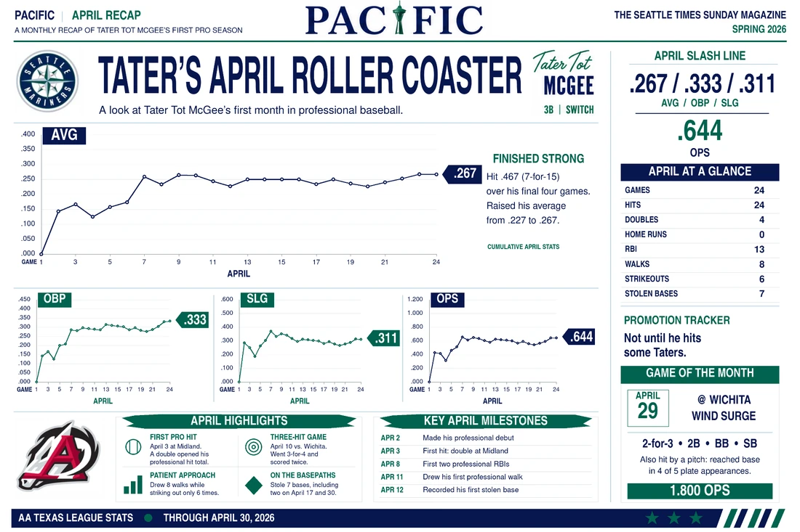
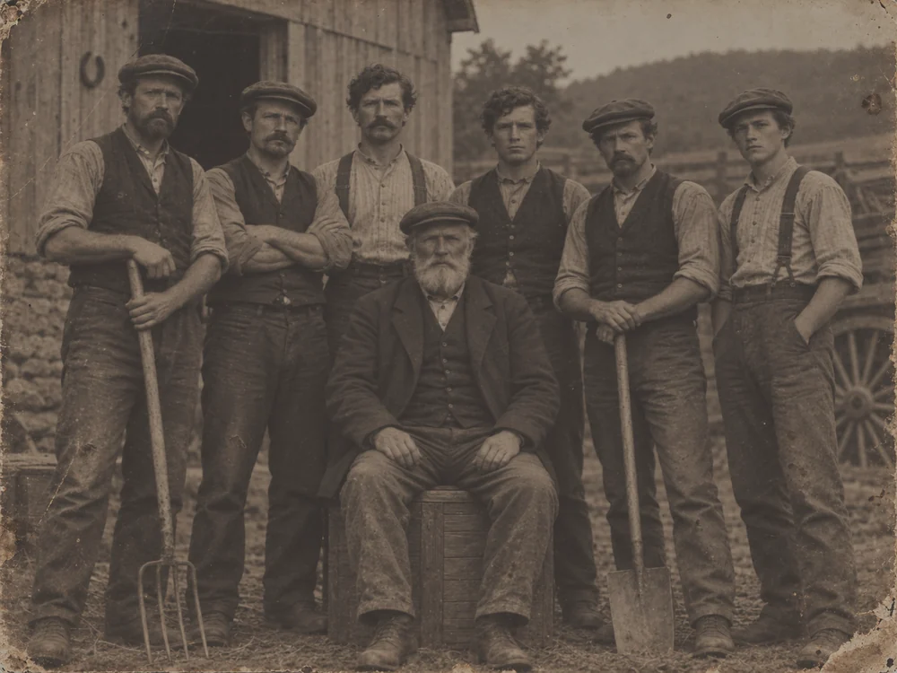
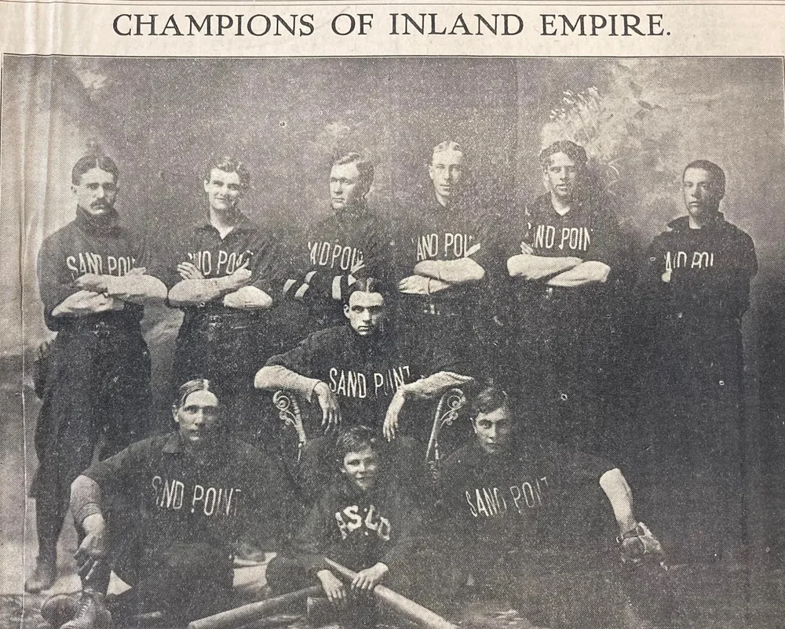
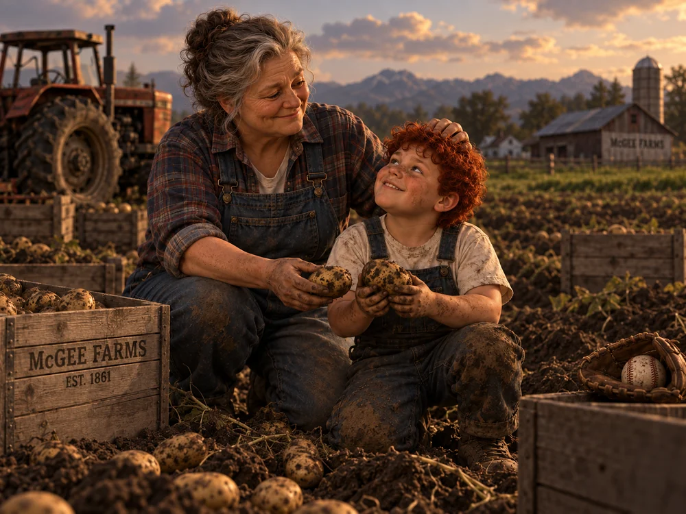
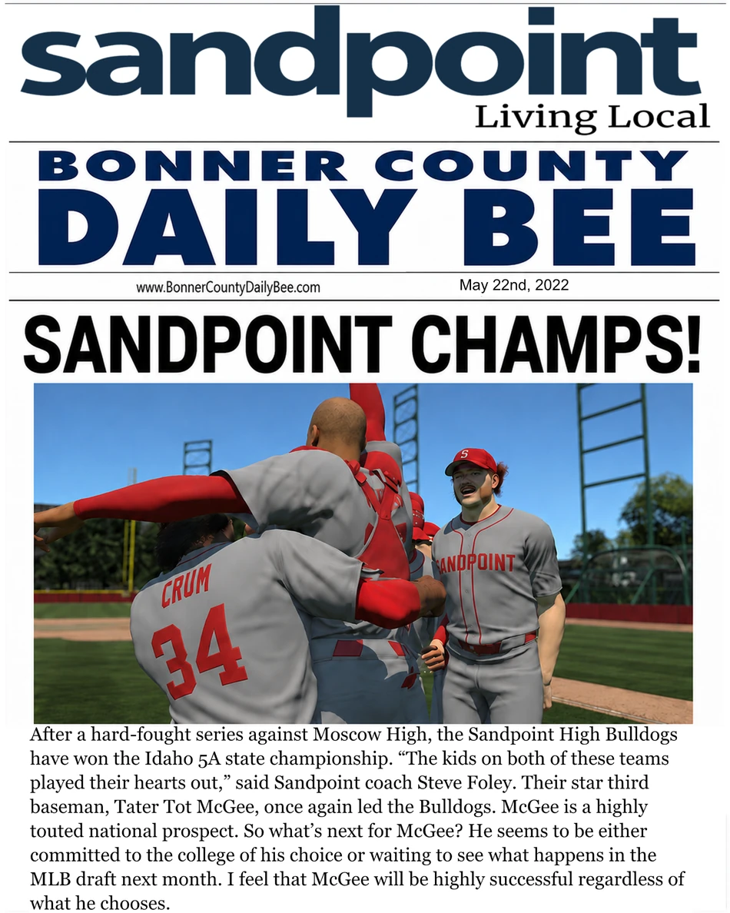
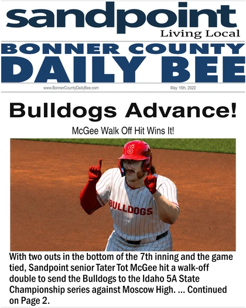
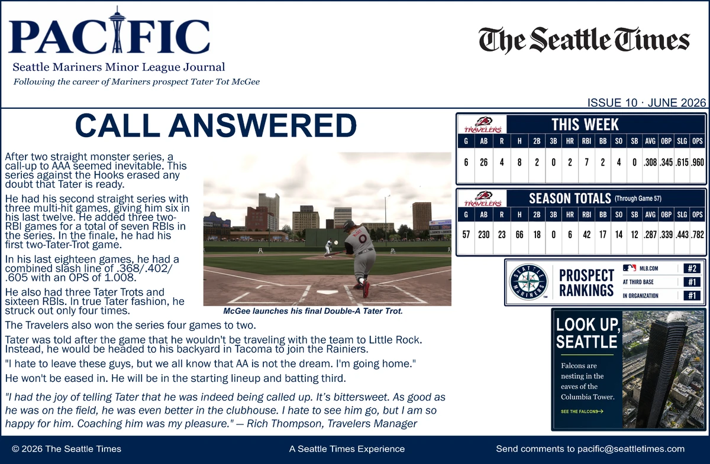
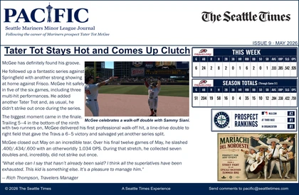
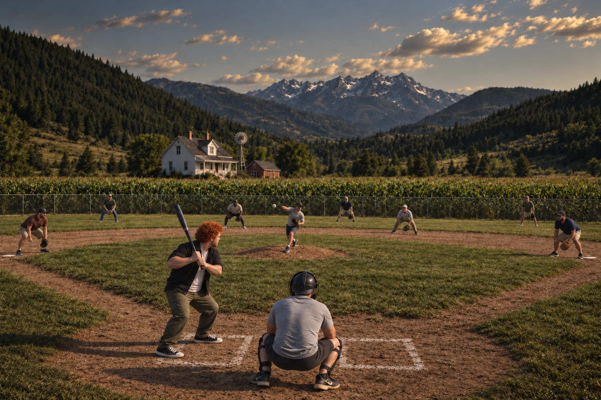

April 2026
Once you hear the name “Tater Tot” McGee, you expect a silly nickname. Then you meet him and discover it’s something much bigger. It’s a name rooted in Irish tragedy, Idaho potato farming, and more than 160 years of baseball history.
Now the complete 17-page feature is readable as a normal web story — no PDF required.
Enter the McGee story →“Two things are hardwired in the McGee DNA: growing taters and hitting taters.”— Tater Tot McGee




Tater's high school chapter ends with an Idaho 5A state championship — the moment that launches the college and draft path.

McGee's walk-off double sends Sandpoint to the state championship series.

After a six-game series against the Hooks erased any doubt that Tater was ready, the Mariners made the move. The Double-A chapter closes with the call to Triple-A.
Browse the PACIFIC archive
The first professional walk-off hit closes May.
The PACIFIC professional archive begins in Midland.

Stephen McGee built a small baseball field on the family farm in the nineteenth century. More than a century later, Tater grew up hitting on that same ground.
Read Stephen's chapter →